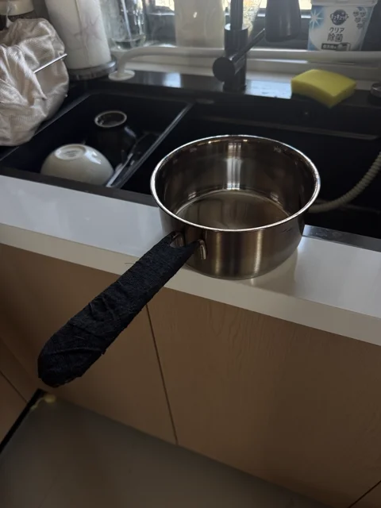
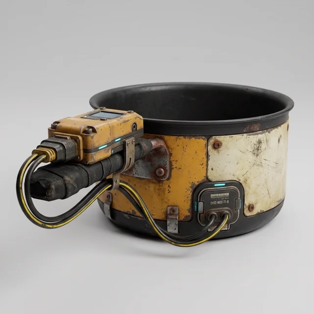
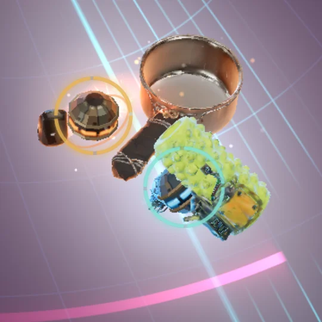

  <!-- 评委版 opening page (vite.config.js puts it in for --mode judge): 凡朔's 奶锅 page from his UI preview (11-07,
       Elara ce042e3d), titled with the game's name and the 奶锅 as its example (Elara 0e4694bd). Plain HTML so it shows while the game loads behind it; judge.js turns 和电脑打 / 和人打 on once the page is
       ready, and only then loads the pot's 3D into the box (a still of that 3D at its first angle, on no ground, stands in
     until it comes: the styled picture's grey square read as a white frame, Castor, Elara 3d42a0c1). -->
  <section id="intro" aria-label="万物对战 · 评委试玩">
    <header class="khead"><i></i> 评委试玩 <small>Aholo 3D AI 黑客松</small><button type="button" class="kmute mute" id="introMute" aria-label="关掉声音"><svg viewBox="0 0 24 24"><path d="M4 9.5h3.5L12 5.5v13l-4.5-4H4z" /><path class="w1" d="M15.5 9a4 4 0 0 1 0 6" /><path class="w2" d="M18 6.5a7.5 7.5 0 0 1 0 11" /><path class="x" d="M16 9.5l5 5M21 9.5l-5 5" /></svg></button></header>
    <div class="kbench">
      <div class="ktitle"><h1>万物<span>对战</span></h1><p class="ksub">拍一件身边的东西，它替你上场对撞</p></div>
      <div class="kmodel" id="introModel"></div>
      <div class="kcap"><span>示范：一口奶锅</span><button type="button" class="khull" id="introHull" aria-pressed="false" hidden>看碰撞体</button><span id="introHint">3D 稍后载入</span></div>
    </div>
    <div class="kfoot">
      <div class="krow"><h2>从厨房到赛场</h2><button type="button" class="kshoot" id="introShoot" disabled><svg viewBox="0 0 24 24" aria-hidden="true"><path d="M4 8h3l2-3h6l2 3h3v11H4z" /><circle cx="12" cy="13" r="3.5" /></svg>拍一件试试</button></div>
      <div class="ksamples">
        <figure><figcaption>实物照片</figcaption></figure>
        <span aria-hidden="true">→</span>
        <figure><figcaption>改装设计</figcaption></figure>
        <span aria-hidden="true">→</span>
        <figure><figcaption>上场对撞</figcaption></figure>
      </div>
      <!-- Two ways to play (远夏 06bec9f5): the three stages against the computer, or two people at this one phone. -->
      <div class="kmodes">
        <button type="button" class="kgo" id="introGo" disabled><span>载入中…</span><small>闯三关</small><b aria-hidden="true">→</b></button>
        <button type="button" class="kgo" id="introPvp" disabled><span>载入中…</span><small>一台手机，面对面</small><b aria-hidden="true">→</b></button>
      </div>
    </div>
  </section>
